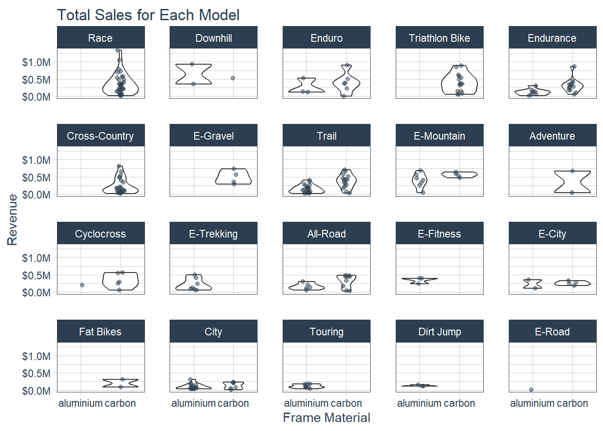
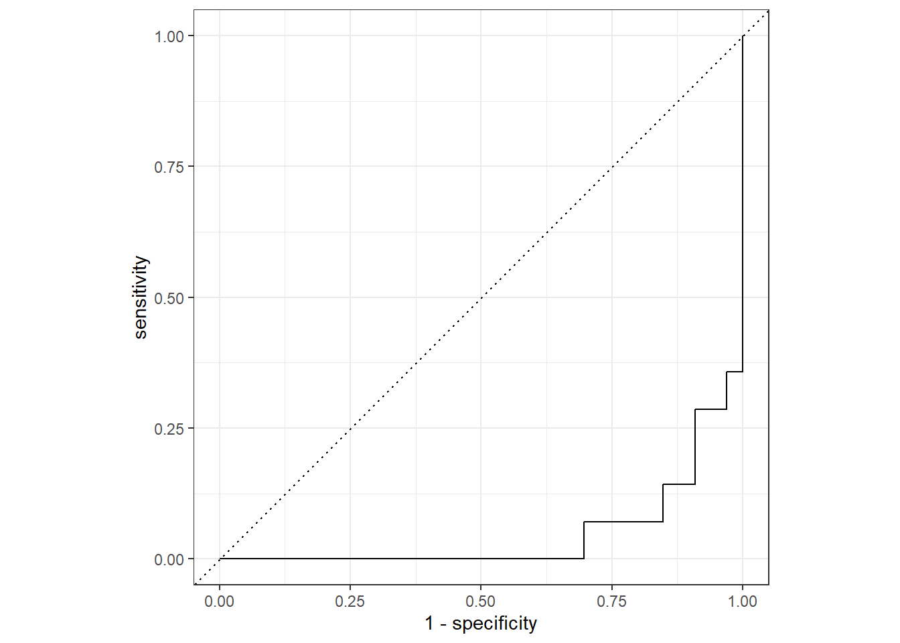
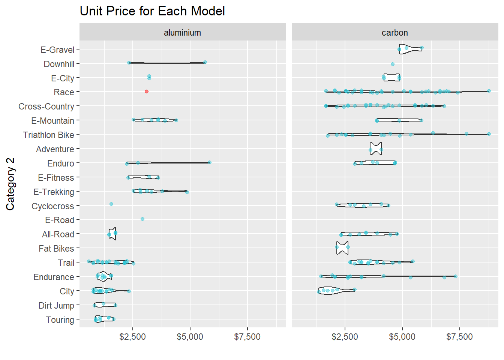

library(tidymodels)
library(broom.mixed)
library(xgboost)
library(tidyverse)
library(parsnip)
library(recipes)
library(rsample)
library(yardstick)
library(rpart.plot)
library(modeldata)
# Data exploration
bike_data_tbl <- readRDS("C:/Users/ranja/Documents/GitHub/ss24-bdml-ranjan/Business Decisions with Machine Learning/Machine Learning/data/Business Decisions with Machine Learning/bike_orderlines.rds")
model_sales_tbl <- bike_data_tbl %>%
select(total_price, model, category_2, frame_material) %>%
group_by(model, category_2, frame_material) %>%
summarise(total_sales = sum(total_price)) %>%
ungroup() %>%
arrange(desc(total_sales))
model_sales_tbl %>%
mutate(category_2 = as_factor(category_2) %>%
fct_reorder(total_sales, .fun = max) %>%
fct_rev()) %>%
ggplot(aes(frame_material, total_sales)) +
geom_violin() +
geom_jitter(width = 0.1, alpha = 0.5, color = "#2c3e50") +
#coord_flip() +
facet_wrap(~ category_2) +
scale_y_continuous(labels = scales::dollar_format(scale = 1e-6, suffix = "M", accuracy = 0.1)) +
tidyquant::theme_tq() +
labs(
title = "Total Sales for Each Model",
x = "Frame Material", y = "Revenue"
)
bike_features_tbl <- readRDS("C:/Users/ranja/Documents/GitHub/ss24-bdml-ranjan/Business Decisions with Machine Learning/Machine Learning/data/Business Decisions with Machine Learning/bike_features_tbl.rds")
bike_features_tbl <- bike_features_tbl %>%
select(frame_material:gender, `Rear Derailleur`, `Shift Lever`) %>%
mutate(
`shimano dura-ace` = `Rear Derailleur` %>% str_to_lower() %>% str_detect("shimano dura-ace ") %>% as.numeric(),
`shimano ultegra` = `Rear Derailleur` %>% str_to_lower() %>% str_detect("shimano ultegra ") %>% as.numeric(),
`shimano 105` = `Rear Derailleur` %>% str_to_lower() %>% str_detect("shimano 105 ") %>% as.numeric(),
`shimano tiagra` = `Rear Derailleur` %>% str_to_lower() %>% str_detect("shimano tiagra ") %>% as.numeric(),
`Shimano sora` = `Rear Derailleur` %>% str_to_lower() %>% str_detect("shimano sora") %>% as.numeric(),
`shimano deore` = `Rear Derailleur` %>% str_to_lower() %>% str_detect("shimano deore(?! xt)") %>% as.numeric(),
`shimano slx` = `Rear Derailleur` %>% str_to_lower() %>% str_detect("shimano slx") %>% as.numeric(),
`shimano grx` = `Rear Derailleur` %>% str_to_lower() %>% str_detect("shimano grx") %>% as.numeric(),
`Shimano xt` = `Rear Derailleur` %>% str_to_lower() %>% str_detect("shimano deore xt |shimano xt ") %>% as.numeric(),
`Shimano xtr` = `Rear Derailleur` %>% str_to_lower() %>% str_detect("shimano xtr") %>% as.numeric(),
`Shimano saint` = `Rear Derailleur` %>% str_to_lower() %>% str_detect("shimano saint") %>% as.numeric(),
`SRAM red` = `Rear Derailleur` %>% str_to_lower() %>% str_detect("sram red") %>% as.numeric(),
`SRAM force` = `Rear Derailleur` %>% str_to_lower() %>% str_detect("sram force") %>% as.numeric(),
`SRAM rival` = `Rear Derailleur` %>% str_to_lower() %>% str_detect("sram rival") %>% as.numeric(),
`SRAM apex` = `Rear Derailleur` %>% str_to_lower() %>% str_detect("sram apex") %>% as.numeric(),
`SRAM xx1` = `Rear Derailleur` %>% str_to_lower() %>% str_detect("sram xx1") %>% as.numeric(),
`SRAM x01` = `Rear Derailleur` %>% str_to_lower() %>% str_detect("sram x01|sram xo1") %>% as.numeric(),
`SRAM gx` = `Rear Derailleur` %>% str_to_lower() %>% str_detect("sram gx") %>% as.numeric(),
`SRAM nx` = `Rear Derailleur` %>% str_to_lower() %>% str_detect("sram nx") %>% as.numeric(),
`SRAM sx` = `Rear Derailleur` %>% str_to_lower() %>% str_detect("sram sx") %>% as.numeric(),
`SRAM sx` = `Rear Derailleur` %>% str_to_lower() %>% str_detect("sram sx") %>% as.numeric(),
`Campagnolo potenza` = `Rear Derailleur` %>% str_to_lower() %>% str_detect("campagnolo potenza") %>% as.numeric(),
`Campagnolo super record` = `Rear Derailleur` %>% str_to_lower() %>% str_detect("campagnolo super record") %>% as.numeric(),
`shimano nexus` = `Shift Lever` %>% str_to_lower() %>% str_detect("shimano nexus") %>% as.numeric(),
`shimano alfine` = `Shift Lever` %>% str_to_lower() %>% str_detect("shimano alfine") %>% as.numeric()
) %>%
select(-c(`Rear Derailleur`, `Shift Lever`)) %>%
mutate_if(is.numeric, ~replace(., is.na(.), 0))
bike_features_tbl <- bike_features_tbl %>%
mutate(id = row_number()) %>%
mutate(frame_material = factor(frame_material)) %>%
select(id, everything())
bike_features_tbl %>% distinct(category_2)# A tibble: 20 × 1
category_2
<chr>
1 Race
2 Endurance
3 E-Road
4 Cyclocross
5 Triathlon Bike
6 Fat Bikes
7 Cross-Country
8 Adventure
9 All-Road
10 E-Gravel
11 Trail
12 E-Mountain
13 Downhill
14 Dirt Jump
15 Enduro
16 E-City
17 E-Trekking
18 E-Fitness
19 City
20 Touring split_obj <- rsample::initial_split(bike_features_tbl, prop = 0.80,
strata = "category_2")
split_obj %>% training() %>% distinct(category_2)# A tibble: 20 × 1
category_2
<chr>
1 Race
2 Endurance
3 E-Road
4 Cyclocross
5 Triathlon Bike
6 Fat Bikes
7 Cross-Country
8 Adventure
9 All-Road
10 E-Gravel
11 E-Mountain
12 Dirt Jump
13 Enduro
14 E-City
15 E-Trekking
16 E-Fitness
17 City
18 Touring
19 Trail
20 Downhill split_obj %>% testing() %>% distinct(category_2)# A tibble: 15 × 1
category_2
<chr>
1 Race
2 Endurance
3 Cyclocross
4 Triathlon Bike
5 Cross-Country
6 All-Road
7 E-Gravel
8 Trail
9 E-Mountain
10 Downhill
11 Enduro
12 E-Trekking
13 E-City
14 City
15 Touring train_tbl <- training(split_obj)
test_tbl <- testing(split_obj)
train_data <- train_tbl %>% set_names(str_replace_all(names(train_tbl), " |-", "_"))
test_data <- test_tbl %>% set_names(str_replace_all(names(test_tbl), " |-", "_"))
# recipe
bike_rec <-
recipe(frame_material ~ ., data = train_data) %>%
step_dummy(all_nominal(), -all_outcomes()) %>%
step_zv(all_predictors())
d <- summary(bike_rec)
lr_mod <-
logistic_reg() %>%
set_engine("glm")
lr_modLogistic Regression Model Specification (classification)
Computational engine: glm bike_wflow <-
workflow() %>%
add_model(lr_mod) %>%
add_recipe(bike_rec)
bike_wflow══ Workflow ════════════════════════════════════════════════════════════════════
Preprocessor: Recipe
Model: logistic_reg()
── Preprocessor ────────────────────────────────────────────────────────────────
2 Recipe Steps
• step_dummy()
• step_zv()
── Model ───────────────────────────────────────────────────────────────────────
Logistic Regression Model Specification (classification)
Computational engine: glm bike_fit <-
bike_wflow %>%
fit(data = train_data)
bike_fit══ Workflow [trained] ══════════════════════════════════════════════════════════
Preprocessor: Recipe
Model: logistic_reg()
── Preprocessor ────────────────────────────────────────────────────────────────
2 Recipe Steps
• step_dummy()
• step_zv()
── Model ───────────────────────────────────────────────────────────────────────
Call: stats::glm(formula = ..y ~ ., family = stats::binomial, data = data)
Coefficients:
(Intercept) id
48.67331 1.09429
weight price
-24.46404 0.07618
shimano_dura_ace shimano_ultegra
-53.91547 -15.19229
shimano_105 shimano_tiagra
34.19917 45.54280
shimano_deore shimano_slx
64.57240 20.39402
shimano_grx Shimano_xt
2.79961 -24.32197
SRAM_red SRAM_force
-273.68994 -118.33458
SRAM_rival SRAM_apex
-40.96203 -38.49222
SRAM_xx1 SRAM_x01
-131.15824 -75.84288
SRAM_gx SRAM_nx
22.48848 21.75945
SRAM_sx Campagnolo_potenza
65.31134 -60.95752
Campagnolo_super_record shimano_alfine
-361.50828 -71.11165
category_1_Gravel category_1_Hybrid...City
-188.27983 -139.84297
category_1_Mountain category_1_Road
-91.55500 -55.62134
category_2_All.Road category_2_City
160.97272 -62.24978
category_2_Cross.Country category_2_Cyclocross
-16.94954 59.87071
category_2_Dirt.Jump category_2_Downhill
-15.38780 -137.82183
category_2_E.City category_2_E.Fitness
-41.75343 -221.95195
category_2_E.Gravel category_2_E.Mountain
-92.70342 28.39147
category_2_E.Road category_2_E.Trekking
19.27111 NA
category_2_Endurance category_2_Enduro
30.17822 -61.11230
category_2_Fat.Bikes category_2_Race
128.10774 -18.33951
category_2_Touring category_2_Trail
NA NA
...
and 34 more lines.bike_fit %>%
pull_workflow_fit() %>%
tidy()# A tibble: 75 × 5
term estimate std.error statistic p.value
<chr> <dbl> <dbl> <dbl> <dbl>
1 (Intercept) 48.7 1824640. 0.0000267 1.00
2 id 1.09 2306. 0.000475 1.00
3 weight -24.5 74668. -0.000328 1.00
4 price 0.0762 43.5 0.00175 0.999
5 shimano_dura_ace -53.9 628840. -0.0000857 1.00
6 shimano_ultegra -15.2 588055. -0.0000258 1.00
7 shimano_105 34.2 596043. 0.0000574 1.00
8 shimano_tiagra 45.5 608946. 0.0000748 1.00
9 shimano_deore 64.6 248536. 0.000260 1.00
10 shimano_slx 20.4 47453285. 0.000000430 1.00
# ℹ 65 more rowsbike_pred <-
predict(bike_fit, test_data, type="prob") %>%
bind_cols(test_data %>% select(frame_material, category_2))
bike_pred %>%
roc_curve(truth = frame_material, .pred_aluminium) %>%
autoplot()
bike_pred %>%
roc_curve(truth = frame_material, .pred_carbon) %>%
autoplot()
bike_pred# A tibble: 47 × 4
.pred_aluminium .pred_carbon frame_material category_2
<dbl> <dbl> <fct> <chr>
1 2.22e-16 1 e+ 0 carbon Race
2 1.00e+ 0 2.18e- 4 aluminium Endurance
3 1.00e+ 0 8.85e-11 aluminium Endurance
4 2.22e-16 1 e+ 0 carbon Endurance
5 2.22e-16 1 e+ 0 carbon Endurance
6 2.22e-16 1 e+ 0 carbon Cyclocross
7 2.22e-16 1 e+ 0 carbon Cyclocross
8 2.22e-16 1 e+ 0 carbon Triathlon Bike
9 2.22e-16 1 e+ 0 carbon Triathlon Bike
10 2.22e-16 1 e+ 0 carbon Triathlon Bike
# ℹ 37 more rowsroc_al <- bike_pred %>%
roc_auc(truth = frame_material, .pred_aluminium)
roc_al# A tibble: 1 × 3
.metric .estimator .estimate
<chr> <chr> <dbl>
1 roc_auc binary 0.932roc_car <- bike_pred %>%
roc_auc(truth = frame_material, .pred_carbon)
roc_car# A tibble: 1 × 3
.metric .estimator .estimate
<chr> <chr> <dbl>
1 roc_auc binary 0.0678# Evaluation
model_01_linear_lm_simple <- linear_reg(mode = "regression") %>%
set_engine("lm") %>%
fit(price ~ category_2 + frame_material, data = train_data)
model_01_linear_lm_simpleparsnip model object
Call:
stats::lm(formula = price ~ category_2 + frame_material, data = data)
Coefficients:
(Intercept) category_2All-Road category_2City
2221.295 -504.937 -1411.118
category_2Cross-Country category_2Cyclocross category_2Dirt Jump
129.737 -587.882 -955.628
category_2Downhill category_2E-City category_2E-Fitness
1772.705 742.082 821.039
category_2E-Gravel category_2E-Mountain category_2E-Road
1125.000 1159.403 697.705
category_2E-Trekking category_2Endurance category_2Enduro
1303.705 -835.222 211.487
category_2Fat Bikes category_2Race category_2Touring
-1460.000 614.286 -1145.628
category_2Trail category_2Triathlon Bike frame_materialcarbon
-479.168 -7.308 1622.705 test_data <- test_data %>% filter(category_2 != "Fat Bikes")
yards <- model_01_linear_lm_simple
yardsparsnip model object
Call:
stats::lm(formula = price ~ category_2 + frame_material, data = data)
Coefficients:
(Intercept) category_2All-Road category_2City
2221.295 -504.937 -1411.118
category_2Cross-Country category_2Cyclocross category_2Dirt Jump
129.737 -587.882 -955.628
category_2Downhill category_2E-City category_2E-Fitness
1772.705 742.082 821.039
category_2E-Gravel category_2E-Mountain category_2E-Road
1125.000 1159.403 697.705
category_2E-Trekking category_2Endurance category_2Enduro
1303.705 -835.222 211.487
category_2Fat Bikes category_2Race category_2Touring
-1460.000 614.286 -1145.628
category_2Trail category_2Triathlon Bike frame_materialcarbon
-479.168 -7.308 1622.705 g1 <- bike_features_tbl %>%
mutate(category_2 = as.factor(category_2) %>%
fct_reorder(price)) %>%
ggplot(aes(category_2, price)) +
geom_violin() +
geom_jitter(width = 0.1, alpha = 0.5, color = "#2dc6d6") +
coord_flip() +
facet_wrap(~ frame_material) +
scale_y_continuous(labels = scales::dollar_format()) +
labs(
title = "Unit Price for Each Model",
y = "", x = "Category 2"
)
g1new_race_alu <- tibble(
model = "Exceed AL SL new",
category_2 = "Race",
frame_material = "aluminium",
shimano_dura_ace = 0,
shimano_ultegra = 0,
shimano_105 = 0,
shimano_tiagra = 0,
Shimano_sora = 0,
shimano_deore = 0,
shimano_slx = 0,
shimano_grx = 0,
Shimano_xt = 1,
Shimano_xtr = 0,
Shimano_saint = 0,
SRAM_red = 0,
SRAM_force = 0,
SRAM_rival = 0,
SRAM_apex = 0,
SRAM_xx1 = 0,
SRAM_x01 = 0,
SRAM_gx = 0,
SRAM_nx = 0,
SRAM_sx = 0,
Campagnolo_potenza = 0,
Campagnolo_super_record = 0,
shimano_nexus = 0,
shimano_alfine = 0
)
new_race_alu# A tibble: 1 × 27
model category_2 frame_material shimano_dura_ace shimano_ultegra shimano_105
<chr> <chr> <chr> <dbl> <dbl> <dbl>
1 Exceed… Race aluminium 0 0 0
# ℹ 21 more variables: shimano_tiagra <dbl>, Shimano_sora <dbl>,
# shimano_deore <dbl>, shimano_slx <dbl>, shimano_grx <dbl>,
# Shimano_xt <dbl>, Shimano_xtr <dbl>, Shimano_saint <dbl>, SRAM_red <dbl>,
# SRAM_force <dbl>, SRAM_rival <dbl>, SRAM_apex <dbl>, SRAM_xx1 <dbl>,
# SRAM_x01 <dbl>, SRAM_gx <dbl>, SRAM_nx <dbl>, SRAM_sx <dbl>,
# Campagnolo_potenza <dbl>, Campagnolo_super_record <dbl>,
# shimano_nexus <dbl>, shimano_alfine <dbl>predict(model_01_linear_lm_simple, new_data = new_race_alu)# A tibble: 1 × 1
.pred
<dbl>
1 2836.models_tbl <- tibble(
model_id = str_c("Model 0", 1:1),
model = list(
model_01_linear_lm_simple
)
)
models_tbl# A tibble: 1 × 2
model_id model
<chr> <list>
1 Model 01 <fit[+]>predictions_new_race_alu_tbl <- models_tbl %>%
mutate(predictions = map(model, predict, new_data = new_race_alu)) %>%
unnest(predictions) %>%
mutate(category_2 = "Race") %>%
left_join(new_race_alu, by = "category_2")
predictions_new_race_alu_tbl# A tibble: 1 × 30
model_id model.x .pred category_2 model.y frame_material shimano_dura_ace
<chr> <list> <dbl> <chr> <chr> <chr> <dbl>
1 Model 01 <fit[+]> 2836. Race Exceed AL … aluminium 0
# ℹ 23 more variables: shimano_ultegra <dbl>, shimano_105 <dbl>,
# shimano_tiagra <dbl>, Shimano_sora <dbl>, shimano_deore <dbl>,
# shimano_slx <dbl>, shimano_grx <dbl>, Shimano_xt <dbl>, Shimano_xtr <dbl>,
# Shimano_saint <dbl>, SRAM_red <dbl>, SRAM_force <dbl>, SRAM_rival <dbl>,
# SRAM_apex <dbl>, SRAM_xx1 <dbl>, SRAM_x01 <dbl>, SRAM_gx <dbl>,
# SRAM_nx <dbl>, SRAM_sx <dbl>, Campagnolo_potenza <dbl>,
# Campagnolo_super_record <dbl>, shimano_nexus <dbl>, shimano_alfine <dbl>g2 <- g1 +
geom_point(aes(y = .pred), color = "red", alpha = 0.5,
data = predictions_new_race_alu_tbl) +
ggrepel::geom_text_repel(aes(label = model_id, y = .pred),
size = 3,
data = predictions_new_race_alu_tbl)
g2